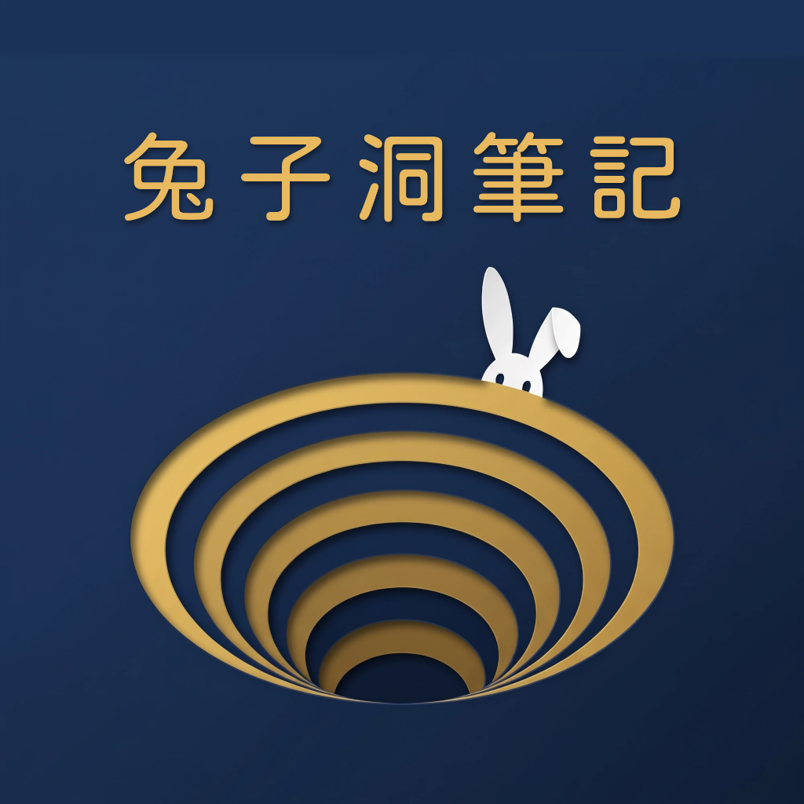
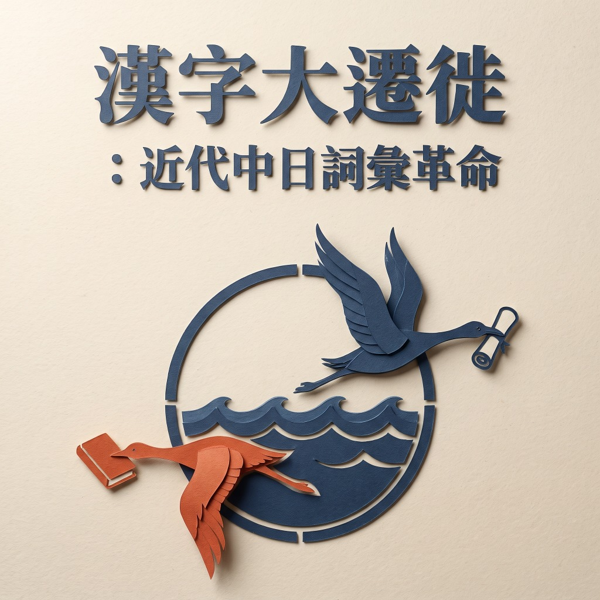

當西方近代哲學與科學衝擊東亞，我們每天使用的「經濟、社會、哲學、主觀、客觀」從何而來？ 從江戶蘭學的刑場解剖、嚴復與梁啟超的譯詞對決，到五四言文一致運動與台灣東亞回流——解構現代漢語底層的驚人零件。
複製下方的私人 Podcast RSS 訂閱連結，在任何你常用的播客 App 內貼上即可完成訂閱。
每一個洞窟都是一次偏執的深潛。已整理上線或籌備中的專題手記：
✦ 訂閱全頻道 RSS，即可在任一新窟完成時於 Podcast App 自動獲取最新集數！